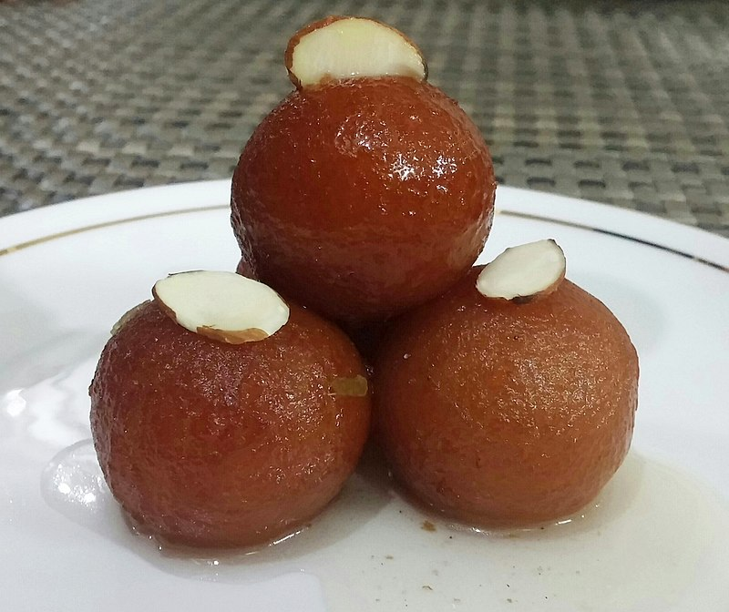

Gulab jamun (also spelled gulaab jamun) are a milk-solid-based South Asian sweet, originating in the Indian subcontinent, notably popular in India, Nepal, Pakistan, and Bangladesh, as well as Myanmar.
It is also common in Mauritius, Fiji, southern and eastern Africa, Malay Peninsula, and the Caribbean countries of Trinidad and Tobago, Guyana, Suriname and Jamaica.
In India, milk solids are prepared by heating milk over a low flame for a long time until most of the water content has evaporated. These milk solids, known as khoya in India, Nepal, Bangladesh, Pakistan and Sri Lanka, are kneaded into a dough, with a small amount of flour, and then shaped into small balls and deep-fried at a low temperature of about 148 °C. The balls are then soaked in a light sugary syrup flavored with green cardamom and rose water, kewra or saffron. Gulab jamun is available commercially, at South Asian restaurants or pre-prepared either in tins or as kits to be prepared at home. Gulab Jamun is the favourite dessert to treat guests with. In the modern households, people rely on instant Gulab Jamun mixes from prominent companies like Gits to prepare these desserts quicker. Gulab Jamun has a distinctive glowing brown or maroon colour resembling the fruit Jamun and so the name Gulab Jamun. Modern chefs have come up with innovative versions of this dessert in Banana Flavour that is equally mouth-watering.
Gulab jamun is a dessert often eaten at festivals, birthdays or major celebrations such as marriages, the Muslim celebrations of Eid ul-Fitr and Eid al-Adha, and the Hindu festival of Diwali (the Indian festival of light). There are various types of gulab jamun and every variety has a distinct taste and appearance.
All Rights Reserved By @ TKN